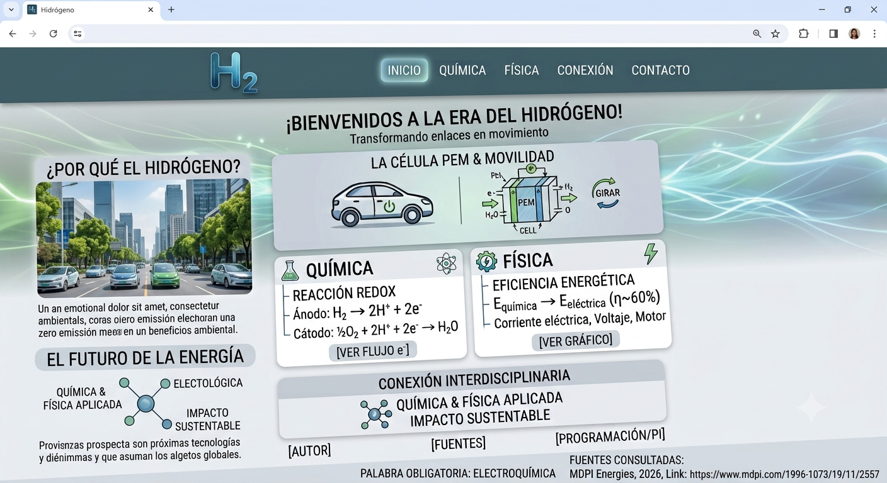

El funcionamiento y la eficiencia de las celdas de combustible de hidrógeno en el transporte limpio.
Esta página principal presenta el tema elegido y conecta con una segunda página llamada contenido.html, donde se amplía la información investigada.
Conexión entre Física y Química
Idea de Física
La termodinámica del proceso (la eficiencia en la conversión de energía química a eléctrica) y la generación de corriente eléctrica (flujo de electrones) que alimenta el motor del vehículo.
Idea de Química
Las reacciones de óxido-reducción (redox) que ocurren dentro de la celda, donde el hidrógeno se oxida en el ánodo y el oxígeno se reduce en el cátodo para formar agua (H2O) como único residuo.
Conexión entre ambas materias
La Química explica cómo se liberan los electrones a través de la ruptura y formación de enlaces en la reacción redox, mientras que la Física explica cómo el movimiento de esos mismos electrones genera una diferencia de potencial (voltaje) y una corriente eléctrica utilizable.
Imagen explicativa del fenómeno

Fuentes consultadas
MDPI Energies (Revista científica internacional de energía). Fecha: 2026. Título del artículo: Hydrogen Fuel Cells and Electric Vehicles: A Systematic Review for Sustainable Mobility. Link: https://www.mdpi.com/1996-1073/19/11/2557 Autor: Expert Market Research (Analistas globales de tecnología). Fecha: 2026. Título del artículo: Hydrogen Fuel Cell Vehicles: Sustainable Transportation. Link: https://www.expertmarketresearch.com/featured-articles/hydrogen-fuel-cell- sustainable-transportationLas fuentes deben ser académicas, educativas o institucionales. No se debe escribir únicamente “Google” o “internet”.
| Tema | Autor o institución | Fecha | Link académico |
|---|---|---|---|
| Fuente 1 relacionada con mi tema | Autor o institución | Año o s.f. | Ver fuente |
Palabra científica obligatoria
La electroquímica estudia cómo una reacción química puede producir electricidad. En las celdas de combustible de hidrógeno, esta reacción transforma la energía del hidrógeno en electricidad paramover vehículos,generando principalmente agua. Por eso, son una alternativa eficiente y más limpia para el transporte
Decisión personal y dificultad presentada
Decisión personal tomada
Decidí enfocarme en el hidrógeno porque es una tecnología clave para la transición energética actual y me interesa el desarrollo de software aplicado a la sustentabilidad.
Dificultad o duda surgida
Me cuesta un poco entender cómo calcular la pérdida de energía en forma de calor durante la reacción; investigaré más sobre la segunda ley de la termodinámica para aclararlo antes de programar la web.